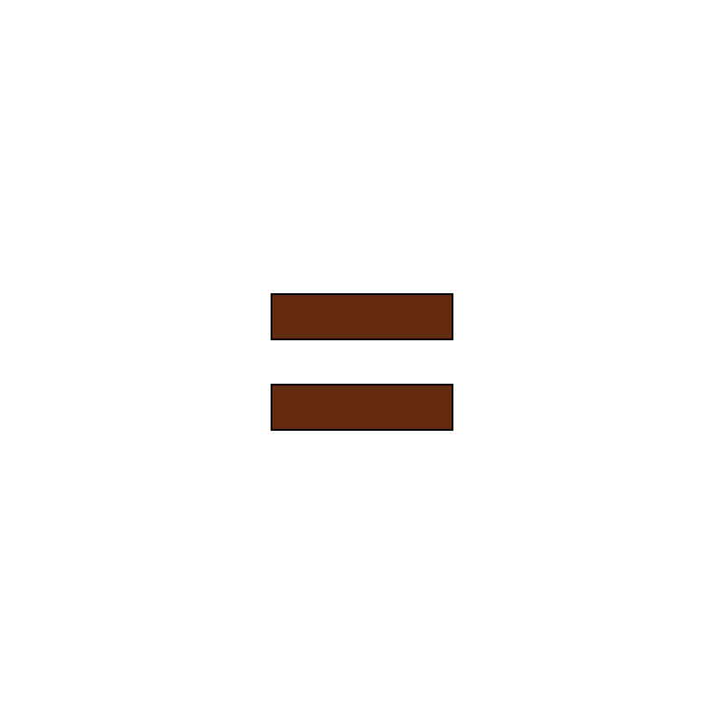

My Vision: Roger Capron + Rudy Autio
Roger Capron stamped clay tiles with organic motifs.
Rudy Autio painted figures, animals, and stories responding to the shape of the base form.

The final output combines these two approaches (imprinting motifs + fluid lines responding to forms)